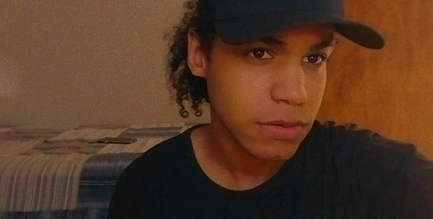

20 de Março de 2023
Jornada do zero à Primeira vaga

Olá, meu nome é Nathan Vargas, tenho 21 anos e recentemente comecei a
estudar desenvolvimento front-end. Estou entusiasmado em compartilhar
meu primeiro projeto, criado com HTML e CSS utilizando os ensinamentos
da Rocketseat. Embora eu ainda seja inexperiente, estou determinado a
aprimorar minhas habilidades e me tornar um profissional competente
nessa área. Caso você queira acompanhar meu desenvolvimento, deixei
abaixo os links para o meu GitHub e LinkedIn. Agradeço muito pela
oportunidade de apresentar meu trabalho e espero que gostem do que
verão. Estou aberto a feedbacks e sugestões para me ajudar a crescer
como desenvolvedor. Obrigado!